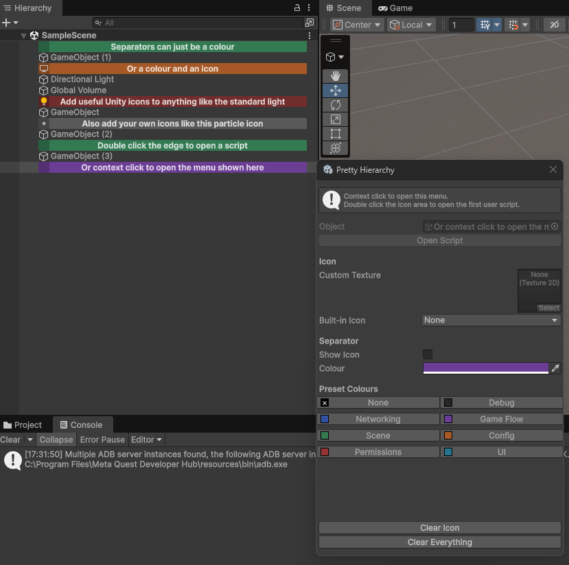

Pretty Hierarchy
Make large Unity scenes easier to navigate with custom hierarchy icons, coloured separators and automatic component icons.
Right-click the icon beside any GameObject to customise it. Double-click to open its first attached user script.
View on GitHubIn Unity, choose Install package from Git URL: